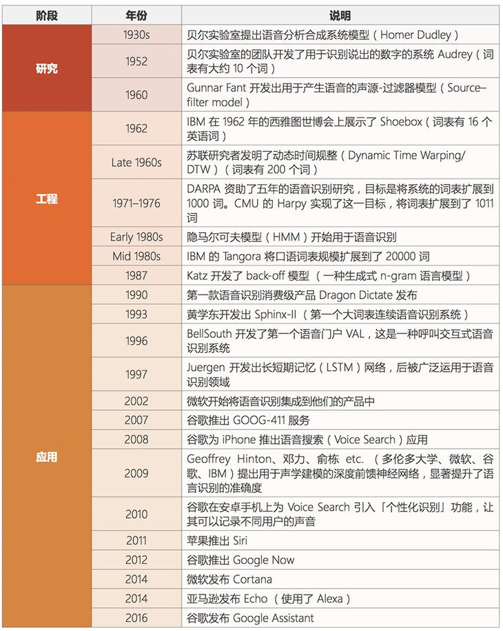

人工智能主要分支
1 人工智能、机器学习和深度学习

- 人工智能和机器学习，深度学习的关系
- 机器学习是人工智能的一个实现途径
- 深度学习是机器学习的一个方法发展而来
2 主要分支介绍
通讯、感知与行动是现代人工智能的三个关键能力，在这里我们将根据这些能力/应用对这三个技术领域进行介绍：计算机视觉(CV)、自然语言处理(NLP)和机器人。在 NLP 领域中，将覆盖文本挖掘/分类、机器翻译和语音识别。
2.1 分支一：计算机视觉
计算机视觉(CV)是指机器感知环境的能力。这一技术类别中的经典任务有图像形成、图像处理、图像提取和图像的三维推理。物体检测和人脸识别是其比较成功的研究领域。
当前阶段：
计算机视觉现已有很多应用，这表明了这类技术的成就，也让我们将其归入到应用阶段。随着深度学习的发展，机器甚至能在特定的案例中实现超越人类的表现。但是，这项技术离社会影响阶段还有一定距离，那要等到机器能在所有场景中都达到人类的同等水平才行(感知其环境的所有相关方面)。
发展历史：


2.2 分支二：语音识别
语音识别是指识别语音(说出的语言)并将其转换成对应文本的技术。相反的任务(文本转语音/TTS)也是这一领域内一个类似的研究主题。
当前阶段：
语音识别已经处于应用阶段很长时间了。最近几年，随着大数据和深度学习技术的发展，语音识别进展颇丰，现在已经非常接近社会影响阶段了。
语音识别领域仍然面临着声纹识别和「鸡尾酒会效应」等一些特殊情况的难题。
现代语音识别系统严重依赖于云，在离线时可能就无法取得理想的工作效果。
发展历史：

- 百度语音识别：
- 距离小于1米，中文字准率97%+
- 支持耳语、长语音、中英文混合及方言

2.3 分支三：文本挖掘/分类
这里的文本挖掘主要是指文本分类，该技术可用于理解、组织和分类结构化或非结构化文本文档。其涵盖的主要任务有句法分析、情绪分析和垃圾信息检测。
当前阶段：
我们将这项技术归类到应用阶段，因为现在有很多应用都已经集成了基于文本挖掘的情绪分析或垃圾信息检测技术。文本挖掘技术也在智能投顾的开发中有所应用，并且提升了用户体验。
文本挖掘和分类领域的一个瓶颈出现在歧义和有偏差的数据上。
发展历史：

2.4 分支四：机器翻译
机器翻译(MT)是利用机器的力量自动将一种自然语言(源语言)的文本翻译成另一种语言(目标语言)。机器翻译方法通常可分成三大类:基于规则的机器翻译(RBMT)、统计机器翻译(SMT)和神经机器翻译(NMT)。
当前阶段：
机器翻译是一个见证了大量发展历程的应用领域。该领域最近由于神经机器翻译而取得了非常显著的进展，但仍然没有全面达到专业译者的水平；但是，我们相信在大数据、云计算和深度学习技术的帮助下，机器翻译很快就将进入社会影响阶段。
在某些情况下，俚语和行话等内容的翻译会比较困难(受限词表问题)。
专业领域的机器翻译(比如医疗领域)表现通常不好。
发展历史：

2.5 分支五：机器人
机器人学(Robotics)研究的是机器人的设计、制造、运作和应用，以及控制它们的计算机系统、传感反馈和信息处理。
机器人可以分成两大类:固定机器人和移动机器人。固定机器人通常被用于工业生产(比如用于装配线)。常见的移动机器人应用有货运机器人、空中机器人和自动载具。机器人需要不同部件和系统的协作才能实现最优的作业。其中在硬件上包含传感器、反应器和控制器；另外还有能够实现感知能力的软件，比如定位、地图测绘和目标识别。
当前阶段：
自上世纪「Robot」一词诞生以来，人们已经为工业制造业设计了很多机器人。工业机器人是增长最快的应用领域，它们在 20 世纪 80 年代将这一领域带入了应用阶段。在安川电机、Fanuc、ABB、库卡等公司的努力下，我们认为进入 21 世纪之后，机器人领域就已经进入了社会影响阶段，此时各种工业机器人已经主宰了装配生产线。此外，软体机器人在很多领域也有广泛的应用，比如在医疗行业协助手术或在金融行业自动执行承销过程。
但是，法律法规和「机器人威胁论」可能会妨碍机器人领域的发展。还有设计和制造机器人需要相对较高的投资。
发展历史：

总的来说，人工智能领域的研究前沿正逐渐从搜索、知识和推理领域转向机器学习、深度学习、计算机视觉和机器人领域。大多数早期技术至少已经处于应用阶段了，而且其中一些已经显现出了社会影响力。一些新开发的技术可能仍处于工程甚至研究阶段，但是我们可以看到不同阶段之间转移的速度变得越来越快。
拓展：人工智能发展必备三要素：
- 数据
- 算法
- 计算力
逐层、分布、并行算法能力提升
GPU、FPGA、TPU能力大幅提升
GPU与CPU对比

Cache, local memory： CPU > GPU
Threads(线程数): GPU > CPU
SIMD Unit(单指令多数据流,以同步方式，在同一时间内执行同一条指令): GPU > CPU
- 1,GPU 加速计算可以将应用程序计算密集部分的工作负载转移到 GPU，同时仍由 CPU 运行其余程序代码。从用户的角度来看，应用程序的运行速度明显加快.
- 2,CPU 由专为顺序串行处理而优化的几个核心组成，而 GPU 则拥有一个由数以千计的更小、更高效的核心（专为同时处理多重任务而设计）组成的大规模并行计算架构.

- 3,CPU需要很强的通用性来处理各种不同的数据类型，同时又要逻辑判断又会引入大量的分支跳转和中断的处理。这些都使得CPU的内部结构异常复杂。而GPU面对的则是类型高度统一的、相互无依赖的大规模数据和不需要被打断的纯净的计算环境。GPU采用了数量众多的计算单元和超长的流水线，但只有非常简单的控制逻辑并省去了Cache。而CPU不仅被Cache占据了大量空间，而且还有复杂的控制逻辑和诸多优化电路，相比之下计算能力只是CPU很小的一部分.

- 提问：什么类型的程序适合在GPU上运行？
（1）计算密集型的程序。所谓计算密集型(Compute-intensive)的程序，就是其大部分运行时间花在了寄存器运算上，寄存器的速度和处理器的速度相当，从寄存器读写数据几乎没有延时。可以做一下对比，读内存的延迟大概是几百个时钟周期；读硬盘的速度就不说了，即便是SSD, 也实在是太慢了。
（2）易于并行的程序。GPU其实是一种SIMD(Single Instruction Multiple Data)架构， 他有成百上千个核，每一个核在同一时间最好能做同样的事情。
Google cloud链接（拓展）：
https://cloud.google.com/tpu/?hl=zh-cn
AI芯片发展史链接（拓展）：
https://buzzorange.com/techorange/2017/09/27/what-intel-google-nvidia-microsoft-do-for-ai-chips/